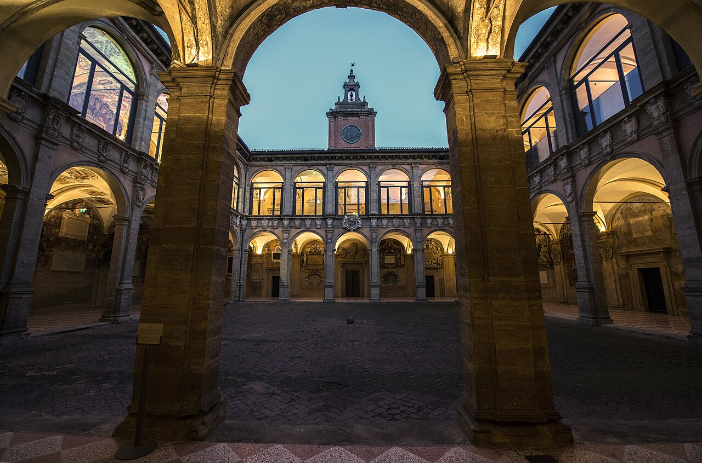

Erasmus Mundus Joint Masters: How the Catalogue Works, Deadlines, Work Experience
Last updated: October 2026. Dates below describe the usual pattern, not a single deadline. Verify each programme's date in the official catalogue.

Erasmus Mundus Joint Masters (EMJM) is the European Union's flagship joint-degree programme. You spend two years studying at two or three universities in different countries, and graduate with a joint or multiple degree. The scholarship covers participation costs, travel and a monthly living allowance, reported at around €1,400 per month in recent cycles. It is one of the most competitive scholarships in the world — and one of the most misunderstood, because applicants treat it like a single scholarship with a single deadline. It is not.
How the catalogue works
There is no central Erasmus Mundus application. The European Commission funds a catalogue of joint master's programmes, published through the official Erasmus Mundus catalogue. Programmes rotate in and out of funding from year to year: a programme that offered scholarships last year is not guaranteed to offer them this year. That is why every serious guide tells you to filter the catalogue by the intake year you are applying for.
Each programme in the catalogue is run by its own consortium of universities, with its own website, its own eligibility page, its own document list and its own deadline. You apply to each consortium directly. You may apply to more than one programme, but check each consortium's rules and the catalogue guidance on multiple applications before doing so.
Two warnings that save applicants every year. First, applying is free: if a website charges you an application fee for Erasmus Mundus, you are on a third-party site, not the official consortium page. Second, never trust a blog's copied deadline list — open the programme's own page from the catalogue and read the date there.
Deadlines: the October–January pattern
For courses starting the following autumn, most programmes open applications in October and close between December and January, with some closing in February. For 2027 entry, that means most deadlines fell between October 2026 and January 2027. A few examples show the spread: some programmes closed in mid-December 2026, others ran into January 2027. Your timeline should be: shortlist programmes from the catalogue by September, prepare documents in October, and submit each application before its own date — not before a single assumed date.
Results typically come in spring, and programmes start the following September. If you miss the winter window, the next intake is a full year away.
Who can apply
- Degree: a bachelor's degree, or final-year bachelor's study provided you graduate before the master's programme starts. Some programmes also accept officially recognised equivalent learning — check the programme page.
- Age: there is no general age limit for Erasmus Mundus.
- Work experience: most programmes do not require it. Experience is often listed as preferred, and it can strengthen an application, but it is not a general eligibility rule the way it is for Chevening or DAAD EPOS. Some professional programmes are exceptions and do require relevant experience — the programme's own page is the authority.
- English: proof is set per programme, often around IELTS 6.5 or an equivalent, with waivers in some cases if your degree was taught in English. See our IELTS guide.
- Previous scholarship: if you have already held an Erasmus Mundus Joint Master scholarship, you cannot receive another one.
How to choose programmes well
Shortlist on fit, not on fame. Ask: does your bachelor's background match the programme's required field? Do the mobility countries and languages suit you? Does the programme's selection weighting favour grades, motivation, or experience — and where are you strongest? A programme where your background is a natural fit beats a famous programme where you are a stretch candidate. Then rank your shortlist by deadline, earliest first, and draft each motivation letter for that specific programme. A letter that could be sent to any programme reads as copied, and consortia notice.
Also check whether the programme offers a scholarship for your intake year at all. Some catalogue entries run as self-funded places in years when scholarship funding is paused. The catalogue's funding status for your intake year is the fact that matters.
For Indian students
The same catalogue rules apply to Indian applicants: same programmes, same per-programme deadlines, same application route through each consortium. Indian students have historically been among the largest national groups of Erasmus Mundus scholars, which reflects both the size of India's graduate pool and the strength of Indian applications — not a quota or a separate track. There is no India-only deadline or eligibility rule. Shortlist from the official catalogue, check each programme's funding status for your intake year, and apply through the consortium's own portal.